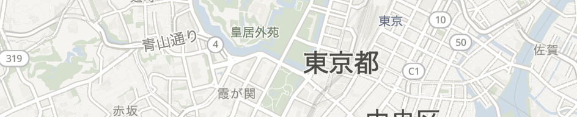
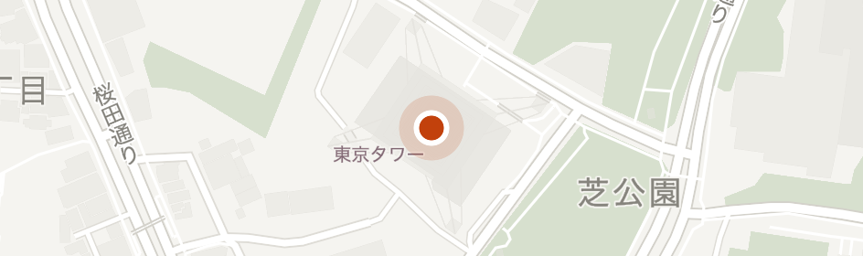
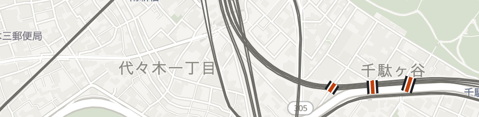
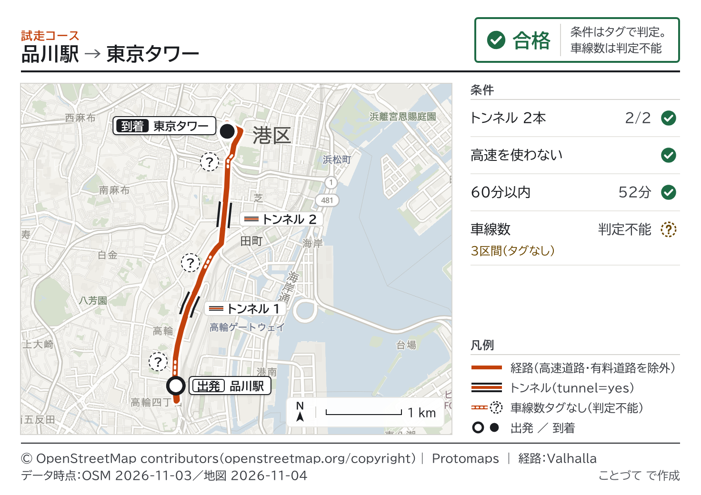
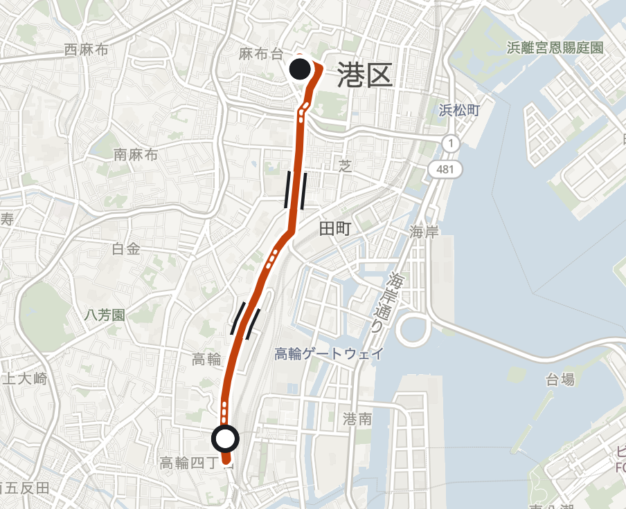
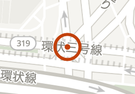

1最初の画面（入力前）インスペクタ＋空の紙
依頼外部通信：api.anthropic.com のみ
日本語で頼んでください

依頼すると、この紙に配る資料ができます
© OpenStreetMap contributors ｜ Protomaps
データ時点：OSM 2026-11-03／地図 2026-11-04
データ時点：OSM 2026-11-03／地図 2026-11-04
日本語で頼んでください


東京都港区芝公園四丁目2番8号出典：アドレス・ベース・レジストリ
どれですか？
（候補はOSMが返したものだけ）

解釈：踏切＝railway=level_crossing（歩行者専用の踏切は含まない）
トンネル＝道路の tunnel=yes（建物の通り抜けは除く）

© OpenStreetMap contributors

© OpenStreetMap contributors ｜ Protomaps ｜ 経路：Valhalla
データ時点：OSM 2026-11-03／地図 2026-11-04

© OpenStreetMap contributors ｜ Protomaps
データ時点：OSM 2026-11-03／地図 2026-11-04
| 宛先 | 件数 | |
|---|---|---|
| api.anthropic.com | 3件 | |
| Google のサービス | 0件 | |
| OSM の公開サーバ | 0件 |
地図・検索・ルート・住所は、自前のサーバで動かしています。
BIZ UDPゴシック（画面と資料）／Noto Sans Mono（タグ・ログ）